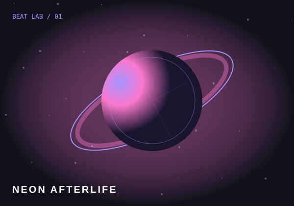

FEATURED TRACK 01 / 08
一段频率，一个新世界。
NEON
AFTERLIFE.
把城市的噪声，变成你的节奏。

SIGNAL FOUND ● 120.00 Hz
B//01
BEAT LAB ORIGINALS HEADPHONES RECOMMENDED ─────
FIND YOUR RHYTHM
选择你的下一段节拍曲目精选
✦ 完成曲目，发现更多频率。累计完成 3 次游玩解锁新曲目
一段频率，一个新世界。
把城市的噪声，变成你的节奏。

FIND YOUR RHYTHM
✦ 完成曲目，发现更多频率。累计完成 3 次游玩解锁新曲目